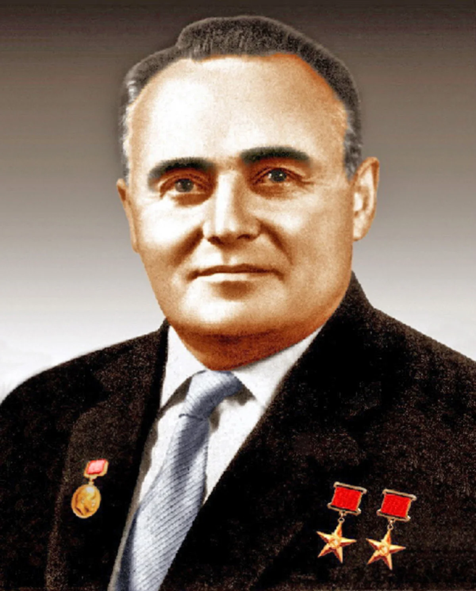

Сергей Павлович Королёв

Серге́й Па́влович Королёв (30 декабря 1906 [12 января 1907], Житомир, Волынская губерния, Российская империя — 14 января 1966, Москва) — советский учёный, конструктор ракетно-космических систем, председатель Совета главных конструкторов СССР (1950—1966), академик АН СССР (1958).Сергей Королёв является одним из основных создателей советской ракетно-космической техники, обеспечившей стратегический паритет и сделавшей Союз Советских Социалистических Республик передовой ракетно-космической державой, и ключевой фигурой в освоении человеком космоса, основателем практической космонавтики. Под его руководством был организован и осуществлён запуск первого искусственного спутника Земли и первого космонавта планеты Юрия Гагарина. Дважды Герой Социалистического Труда, лауреат Ленинской премии. Член КПСС с июля 1953 года. Скончался 14 января 1966 года в Москве, похоронен в некрополе у Кремлёвской стены.
На главную